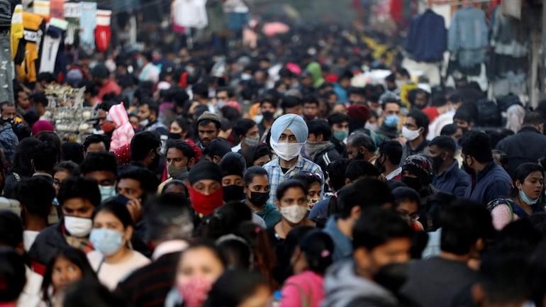

As Omicron spreads in India, mass gatherings spark fears of another wave
octors in India are bracing for a potential third wave driven by the highly contagious Omicron variant,
as cases rise and political leaders hold mass gatherings ahead of key elections.
In the past week, India's Omicron case numbers have more than tripled, with 781 infections now recorded,
compared to 236 last Tuesday.
It may not seem that many in a nation of 1.3 billion people, but the variant's rapid spread in other
countries -- several of which are now seeing dramatic surges -- is enough to make health experts
nervous. And the real number of Omicron cases is likely higher than official figures due to insufficient
testing.
"If India observes the same pattern as the United Kingdom, and if we compare the population of both
countries, 80,000 daily cases in the UK would mean around 1.4 million daily Covid cases in India," said
VK Paul, head of the country's Covid Task Force, at a news conference on December 17.
For the past month, India has been steadily reporting 6,000 to 9,000 total Covid cases a day -- but
several of the country's biggest cities have seen infections spike in recent weeks.
The financial hub Mumbai, which had been reporting 600 to 800 new daily cases in previous weeks,
recorded 2,510 cases on Wednesday. New Delhi, the national capital, also saw more than 900 cases
Wednesday -- a sharp increase from the start of the month, when daily new cases had hovered in the
dozens ...Read more

Gaza: Israel’s May Airstrikes on High-Rises Apparently Unlawful Attacks Cause Major Lasting Harm
The Israeli military’s airstrikes that destroyed four high-rise buildings in Gaza City during the May
2021 fighting apparently violated the laws of war and may amount to war crimes, Human Rights Watch said
today. The attacks also damaged neighboring structures, made several dozen families homeless, and
shuttered scores of businesses that provided livelihoods to many people.
Between May 11 and 15, Israeli forces attacked the Hanadi, al-Jawhara, al-Shorouk, and al-Jalaa towers
in the densely populated al-Rimal neighborhood. In each case, the Israeli military warned tenants of
impending attacks, allowing for their evacuation. Three buildings were immediately leveled while the
fourth, al-Jawhara, sustained extensive damage and is slated to be demolished. Israeli authorities
contend that Palestinian armed groups were using the towers for military purposes, but have provided no
evidence to support those allegations.
“The apparently unlawful Israeli strikes on four high-rise towers in Gaza City caused serious, lasting
harm for countless Palestinians who lived, worked, shopped, or benefitted from businesses based there,”
said Richard Weir, crisis and conflict researcher at Human Rights Watch. “The Israeli military should
publicly produce the evidence that it says it relied on to carry out these attacks.” ...Read
more